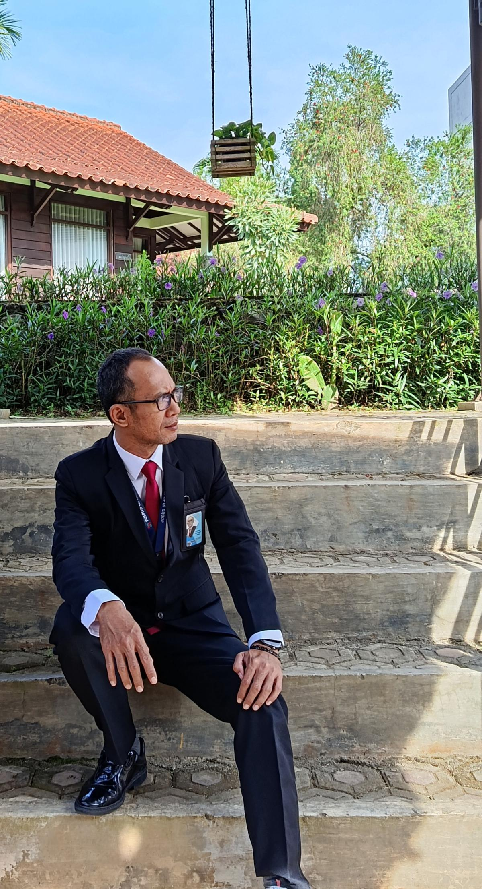
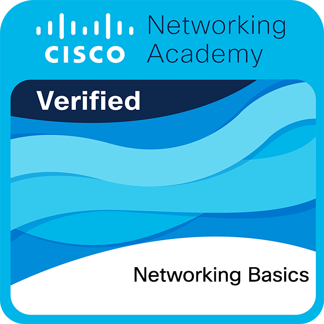
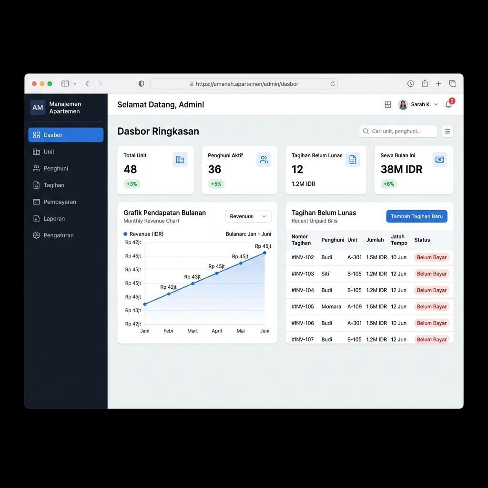
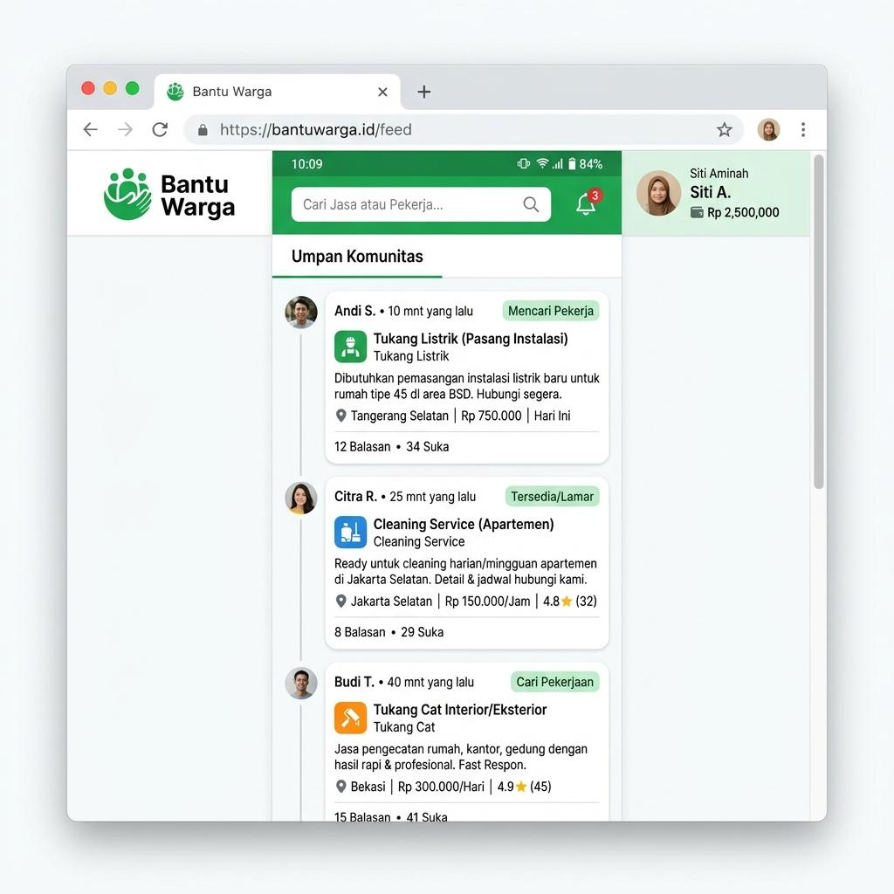
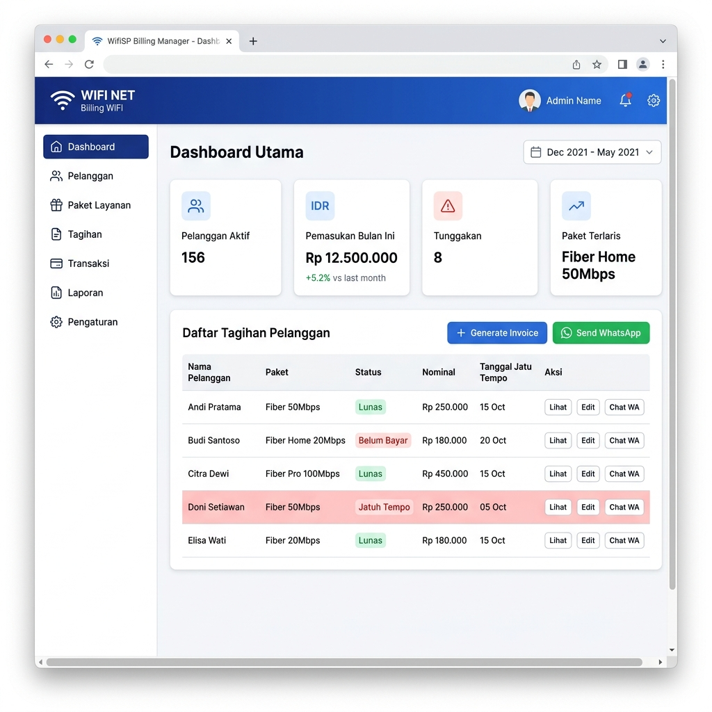
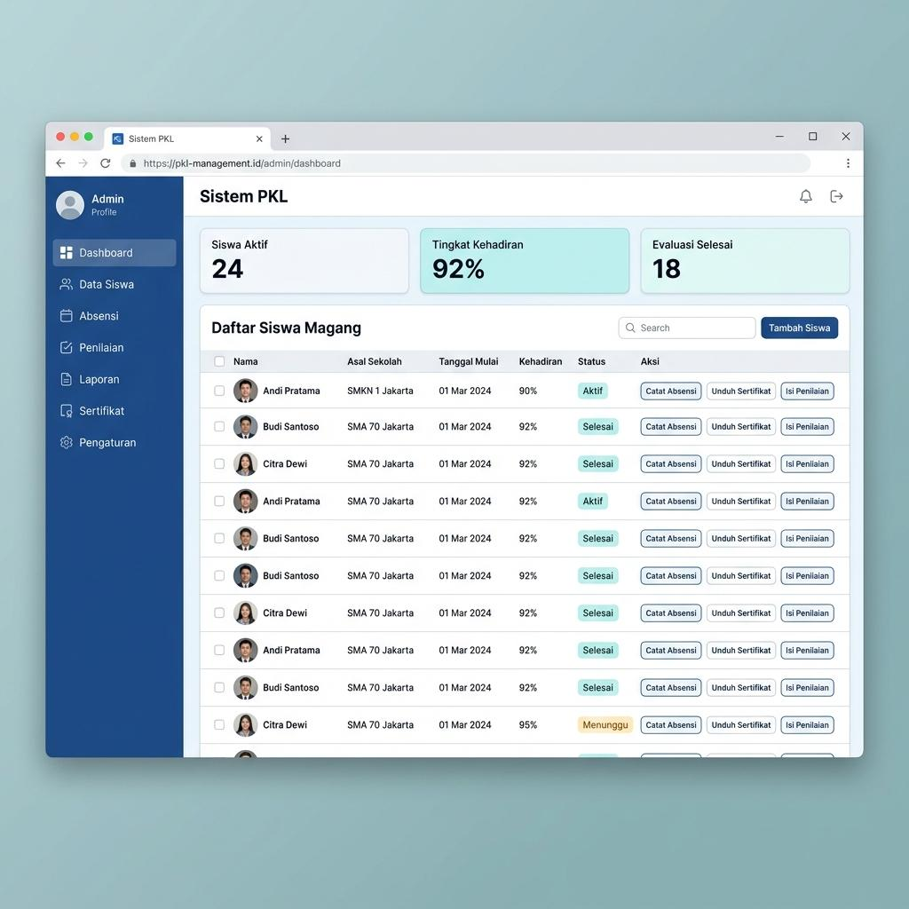
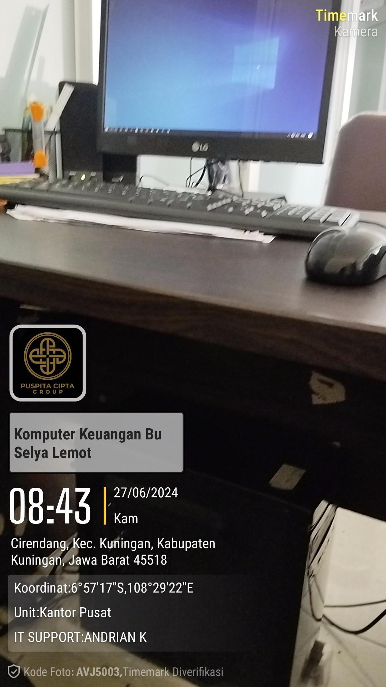
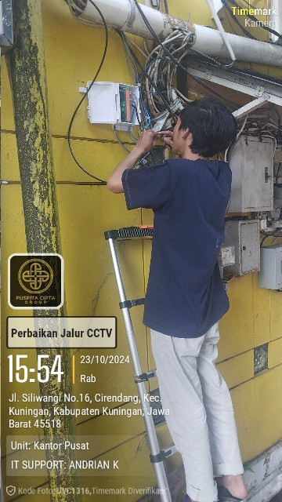
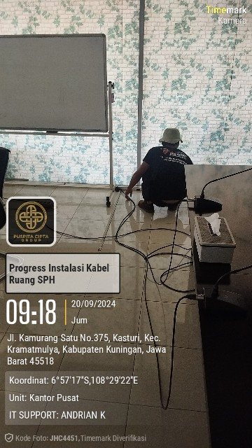

Administrator Senior Infrastruktur & Jaringan IT
IT Infrastructure & Network Administrator dengan pengalaman lebih dari 13 tahun. Spesialis pengelolaan jaringan Mikrotik, server, CCTV, dan pengembangan aplikasi web. Berpengalaman menangani operasional TI lintas sektor industri.
Tentang
Saya memulai karir di industri manufaktur pada tahun 2006, kemudian bertransisi ke bidang IT sejak 2010 sebagai Teknisi Komputer. Selama 12 tahun di Dita Computer, saya menangani ribuan kasus troubleshooting perangkat keras dan lunak, membangun fondasi keahlian teknis yang kuat.
Saat ini menjabat sebagai Administrator Senior Infrastruktur & Jaringan IT di PT Puspita Cipta Group, mengelola operasional TI multi-site untuk divisi Oil & Gas, F&B, dan Resort. Selain infrastruktur, saya mengembangkan aplikasi web internal menggunakan Laravel dan mengelola 8+ website produksi pada VPS.
Kompetensi
Routing, switching, VLAN, VPN, firewall, bandwidth management, dan troubleshooting jaringan enterprise.
Instalasi, konfigurasi, maintenance server Windows & Linux. VPS management.
Full-stack development menggunakan Laravel, MySQL, REST API, dan Payment Gateway.
12+ tahun troubleshooting PC/Laptop, upgrade hardware, instalasi CCTV, perangkat jaringan.
Keamanan jaringan, monitoring sistem, penanganan insiden, keandalan infrastruktur.
Manajemen aset, vendor, proyek IT, RAB, laporan maintenance, koordinasi tim support.
Pengalaman
PT Puspita Cipta Group — Oil & Gas, F&B, Resort
Mengelola infrastruktur IT multi-site, jaringan Mikrotik, 100+ user, 8+ website produksi pada VPS. Mengoptimalkan biaya ISP hingga ±30% melalui konsolidasi jaringan. Membangun aplikasi web internal dengan Laravel.
Puba Computer — Kontrak
Mengelola operasional toko IT, inventaris, penjualan, jadwal kerja tim, dan pelayanan pelanggan.
Dita Computer — Full-time
12 tahun menangani instalasi, perawatan, upgrade hardware, troubleshooting PC/Laptop (Windows & macOS), dan mendukung operasional toko IT.
PT Nippon Seiki · PT Takagi Sari · PT Yuasa Battery
Awal karir di industri manufaktur — membangun etos kerja, kedisiplinan, dan kemampuan teknis dasar.
Berbagai Institusi Pemerintah & Swasta
Layanan IT Support untuk SAMSAT Kuningan, SAMSAT Ciledug, BLUD Brebes, Puskesmas, Instansi Sekolah, PT Pionerr, Pertamina, Alfa Grup, Perhotelan, dan instansi pemerintahan lainnya.
Sertifikasi

Cisco Networking Academy
Sertifikasi dasar jaringan dari Cisco — mencakup konsep TCP/IP, model OSI, subnetting, dan perangkat jaringan.
Sertifikat Kompetensi
Sertifikat kompetensi profesional di bidang Teknologi Informasi dan Infrastruktur.
Lihat Sertifikat (PDF)Sertifikat Kompetensi
Sertifikat tambahan sebagai bukti kompetensi profesional dan pengembangan karir.
Lihat Sertifikat (PDF)Google Digital Marketing
Sertifikat pelatihan dari Google mengenai strategi periklanan digital dan Google Ads yang efektif.
Lihat Sertifikat (PDF)Portfolio

Full-Stack Application
Aplikasi pengelolaan unit apartemen, penghuni, tagihan otomatis, dan pembayaran online dengan multi-guard authentication.

Platform Marketplace
Platform penghubung warga dengan pekerja jasa, dilengkapi e-wallet, payment gateway, dan pusat resolusi sengketa.

Business Application
Sistem billing untuk mengelola pelanggan, paket internet, tagihan bulanan, pembayaran, dan tracking tunggakan.

Education Application
Aplikasi manajemen Praktek Kerja Lapangan untuk pendaftaran siswa, absensi, penilaian, dan sertifikat otomatis.

Infrastruktur Jaringan
Pemeliharaan fisik dan perbaikan perangkat jaringan (router, switch, server) serta manajemen kabel (cable management) untuk memastikan operasional yang handal.

Hardware & Keamanan
Penanganan masalah pada jalur komunikasi CCTV di lingkungan kantor dan site operasional, memastikan keamanan terpantau 24/7 tanpa gangguan transmisi.

Instalasi Fisik
Merancang dan mengeksekusi penarikan kabel LAN (UTP/STP) untuk ruang kantor baru atau fasilitas operasional yang sedang dibangun atau direnovasi.
Kontak
Saya terbuka untuk peluang karir baru, proyek freelance, dan konsultasi infrastruktur IT. Jangan ragu untuk menghubungi saya.